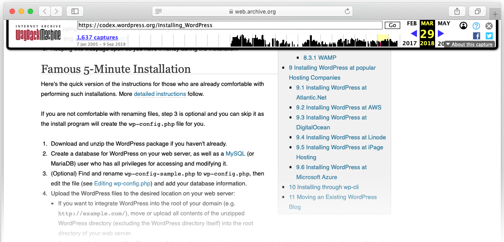

-
5-minutes install -> 30 seconds install
 - No clicks whatsoever™️ install
-
Place to store verything that is or may be specific to an environment. Example:
- Database parameters
- Website URLs (eg. root URL of the website, API endpoint, etc.)
- Email recipients
- This file is not commited.
- Environment variables can be set in CI/CD tools (Travis CI, TeamCity, Gitlab CI, etc.)
What we get
- Not error prone (clicks are...human)
- Fast
- Consistent configuration (same exact PHP / MySQL versions)
- Versioned infrastructure.
- Easy to update configuration for all environmnents.
- Easy to deploy to any hosting providers.
- Easy to deploy to reproduce (integrated into a CI/CD).
- and... one command to setup the project.
What is WP-CLI
WP-CLI provides a command-line interface for many actions you might perform in the WordPress admin.Examples: * wp plugin install bpress --activate * ...
- Add page
- Add menu entries
- Create user (? TO CHECK)
- Create a contact form (no clicks again)